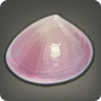
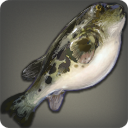
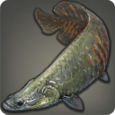

|
|
 |
Philosopher's Stone |
| 142 Rivers | |
| A pink-shelled freshwater mollusk native to the Thaliak River. |
This pink-shelled mollusk earned its playful moniker when a group of alchemy students attending one of Sharlayan's academies submitted several of the wavekin for their graduation projects after spending several moons drinking and whoring on Ul'dah's Pearl Lane. |
|
Fountfish |
| 145 Lakes | |
| A deadly breed of freshwater anglerfish found only on Azys Lla. |
Massive lungs and a siphon-like mouth combine to create a powerful jet that the fountfish can use to propel pressurized water at targets on land or in the air. While the water cannot penetrate deep enough to kill an animal, it will breach the skin, causing a target to bleed. It is this blood upon which the fountfish survives. |
|
Weston Bowfin |
145 Lakes  | |
| A large freshwater fish found in the Churning Mists' Weston Waters. |
Despite the abundance of other, easier-to-land wavekin in Dravanian waters, Weston bowfin are actively sought by moogle anglers─not for the fish themselves, but for the bright-red eggs which remind the moogles of their pom-poms. |
 |
Letter Puffer |
| 145 Floating Islands | |
| A highly poisonous fish commonly found floating in the skies near the Landlord Colony. |
Legend states that letter puffers were once so abundant in the skies above Dravania that clouds of the creatures would blot out the sun. Rampant hunting to collect the volatile gas contained within their bellies drove the puffers to near extinction, and only recently have their numbers begun to grow. |
|
Star Faerie |
| 145 Skies | |
| A tiny transparent mollusk found only at a certain altitude in the lower Churning Mists. |
The only method currently known of distinguishing between a star and a sky faerie is by observing the color of their abdomens. Claims that the star faerie has the flavor of rolanberries have been attributed to a psychological phenomenon that compels individuals to think that something red will taste like something similarly colored. |
|
Gloaming Coral |
| 145 Floating Islands |   |
| A variety of cloud coral seen growing on the undersides of the floating islets that make up the Landlord Colony. |
Another colored variety of cloud coral found growing on the floating islands above Eorzea, gloaming coral's deep red is a favorite of moogle artists who grind the creature's exoskeleton into a red pigment that can be used in painting rocks. |
|
Albino Octopus |
| 145 Lakes | |
| A rarely seen freshwater cephalopod that favors the frigid waters of the Coerthas western highlands. |
These freshwater octopodes feed mainly on the shellfish residing on the beds of glacial lakes. However, when food is scarce, they will leave the water to dig for clams on the frozen shores. This, unfortunately, makes them easy targets for yetis who will dash the octopodes on rocks and then swallow them whole. |
|
Dragon's Soul |
| 145 Floating Islands | |
| A small dragon-like creature that makes its home in the skies above and below the Landlord Colony in the Churning Mists. |
Sight of this dragon-like creature has sent many an alarum ringing, watch-moogles mistaking them for Horde scouts...which normally would be unthinkable, as dragon's souls average only a few ilms in length. |
|
Tornado Shark |
| 180 Floating Islands | |
| A shark capable of riding tornados to extreme altitudes. A stage performance written by a Lominsan playwright on the subject of a tornado shark attack was voted the worst play of all time by the Eorzean Theatrical Society. |
It has recently been suggested that many of Eorzea's sudden and unexplained wind-aspected aetherial disturbances are not natural occurrences, but actually flying sharks with the capacity of manipulating aether. Enough said. |
|
Warballoon |
| 145 Skies | |
| A gargantuan floating jellyfish found in skies high above Eorzea. |
This jellyfish's striking resemblance to an Ixali war balloon suggests that inspiration for the beast tribe's dirigibles came upon witnessing the wavekin floating hither and thither about the heavens. |
|
Fossiltongue |
| 145 Magma | |
| A magma-dwelling cousin of the bonytongue. |
In order to survive the extreme temperatures that would render a normal fish to cinders, the fossiltongue has developed a thick layer of stone scales that cover the wavekin's entire body, including its eyes. To locate its prey, it swims with its fossil-like tongue jut out constantly before it, taking in anything it touches, regardless of whether it is edible or not. |
|
Proto-hropken |
| 145 Aetherochemical Spills | |
| A manlike fish living in the aetherochemical pools of Azys Lla. |
A strange fish that bears an eerie resemblance to the sea-dwelling hropken. Judging from the extensive cloning experiments conducted by the Allagans during their Third Astral Era reign, it is entirely feasible that hropkens were an Allagan creation and that this fish represents one of the ungodly stages of hropken development. |
|
Caiman |
| 145 Rivers | |
| An amphibious scalekin with extended rows of sharp teeth and a nigh-insatiable appetite for fresh meat. Can be found primarily in the Dravanian forelands. |
This snap-jawed scalekin sits atop of the aquatic food chain, feeding on whatever (or whomever!?) crosses his path. The caiman fears no retribution, for there is none who might topple him from his lofty throne. None, that is, of course, except dragons, for even a king must learn to bow his head to the gods. |
 |
Euphotic Pirarucu |
| 180 Lakes XL (7) | |
A biologically engineered fish found in Azys Lla's Delta Quadrant.
[Suitable for display in aquariums tier 4 and higher.] |
A variety of pirarucu specially bred by the Allagans for mass consumption. Characteristics include a natural tendency to remain near the water's surface (to allow for quick retrieval), heightened reproductivity, rapid maturation, nutrient-rich flesh, and an easily removable skeleton (for efficient deboning). |
|
Illuminati Perch |
| 145 Rivers | |
| A foul-smelling fish introduced to the Thaliak River by the Illuminati. |
Selective breeding by the goblin scholars known as the Illuminati have created a new variety of perch so foul smelling that only someone wearing a specially crafted gas mask (conveniently such as a gobbie mask) might withstand the noxious vapors long enough to enjoy the rich, buttery flesh. |
|
Rudderfish |
| 145 Floating Islands | |
| This eel-like flying fish with three pairs of thin wings is found throughout the Sea of Clouds. |
Blindingly fast and possessing almost inexhaustible stamina, the rudderfish is a favorite tool for mother dragons teaching their pups to hunt in the air. |
|
Bomb Puffer |
| 148 Floating Islands | |
| A balloon-like fish inhabiting the skies near the Azys Lla Habisphere. |
Floating like mines in the skies above Azys Lla, bomb puffers will literally explode when set upon by predators, sacrificing their lives to impale their assailants with countless deadly spines. However, the sacrifice is not without purpose. Within those spines are scores of tiny eggs which hatch within the body of the poisoned corpse, and feed on its flesh until old enough to emerge and fly away. |
|
Mucous Minnow |
| 145 Aetherochemical Spills | |
| A strange breed of minnow able to survive the corrupted waters of Azys Lla's aetherochemical pools. |
Unlike the case with other fish living in the Azys Lla's aetherochemical sludge, the mucous minnow will perish if exposed to the liquid for even a short period of time. Luckily for this wavekin, it is born covered in a viscous transparent barrier which not only protects the minnow, but also acts as a filter, allowing the wavekin to absorb waterborne algae. |
|
Unidentified Flying Biomass |
| 150 Floating Islands |  |
| Beyond the fact one can find it in the skies near the Habisphere, absolutely nothing is known about this lump of flying...something. |
Also known as a UFB, the numerous attempts to identify this hovering clam have all been unsuccessful, the worst case resulting in a septuagenarian scholar falling several thousand yalms from a floating islet onto a highland haycock. Most of the hay was salvaged from the accident. The scholar was not. |
|
Hospitalier Fish |
| 145 Lakes | |
| A tiny freshwater fish that inhabits the warm spring waters of Dragonspit. |
Found only in warm waters, this tiny fish feeds mainly on algae and other aquatic flora. In extreme cases, however, the wavekin will eat the dead skin off of animals wading in their habitat. Ishgardian chirurgeons have been known to use this survival trait to their advantage, applying the fish to festering wounds so that they may devour the corrupted flesh. |
|
Scorpionfly |
| 145 Floating Islands | |
| A variety of flying shrimp believed only to live on and around the islets of the Churning Mists. |
The scorpionfly exhibits the peculiar habit of flying its prey to an islet different from the one upon which it subdues its meal. Naturalists guess that this may be done to keep future prey unaware of the threat the scorpionfly poses, making it easier to return to the islet at a later date and hunt with relative ease. |
|
Rockclimber |
| 145 Lakes | |
| A freshwater fish inhabiting the waters of the Azys Lla Delta Quadrant. |
The rockclimber uses a suction cup on its underbelly to climb up rocks. Once in position, it will wait until an insect flies by, and then leap into the air, catch the morsel in its mouth and land safely back in the water. |
|
Blood Skipper |
| 145 Aetherochemical Spills | |
| An ugly fish found in and around the aetherochemical pools of the Azys Lla Alpha Quadrant. |
Blood skippers will use a set of highly developed pelvic fins to periodically “walk” forth from their pools in search of new homes. Such a journey from the water's protective depths would normally leave a creature exposed to land-dwelling predators. Fortunately for the blood skipper, the extreme toxicity of its flesh discourage all but the most hungry. |
|
Cobrafish |
| 148 Floating Islands | |
| A fanged fish native to the skies above Tharl Oom Khash. |
Measuring up to several yalms long, the cobrafish's dorsal fin is covered in thousands of hair-like feelers which are thought to absorb airborne concentrations of wind-aspected aether. The collected energy is then distributed evenly throughout the body to create a temporary state of weightlessness which enables flight via the “flapping” of the pectoral and pelvic fins. |
|
Moogle Spirit |
| 148 Floating Islands | |
| A flat ray-like creature which spends its life riding the thermals occurring throughout the Sea of Clouds. |
So silent are these cousins of the flying manta, that the Vanu Vanu believe them to be the embodied spirits of the legendary moogles who, many generations past, once flourished in the Sea of Clouds. |
|